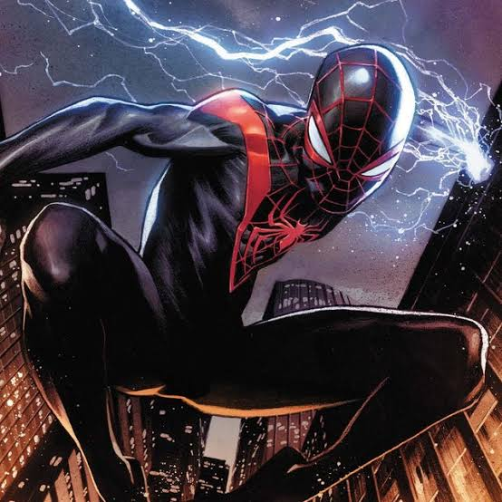

Miles Morales (Tierra-1610)

Nombre Real
Miles Gonzalo Morales
Primera Aparición
Apareció por primera vez en Ultimate Fallout #4 (agosto de 2011), creado por Brian Michael Bendis y Sara Pichelli.
Lore / Historia
Un adolescente de Brooklyn mitad afroamericano y mitad puertorriqueño que obtiene poderes al ser mordido por una araña genéticamente modificada de Oscorp (desarrollada por Norman Osborn). Tras presenciar la trágica muerte de Peter Parker en el universo Ultimate, Miles decide asumir el manto de Spider-Man para honrar su legado.
Logro Importante
Posee habilidades únicas como el "Rayo Veneno" (descarga bioeléctrica) y el camuflaje de invisibilidad. Fue una pieza clave durante las Guerras Secretas y la adaptación de la red del Multiverso.